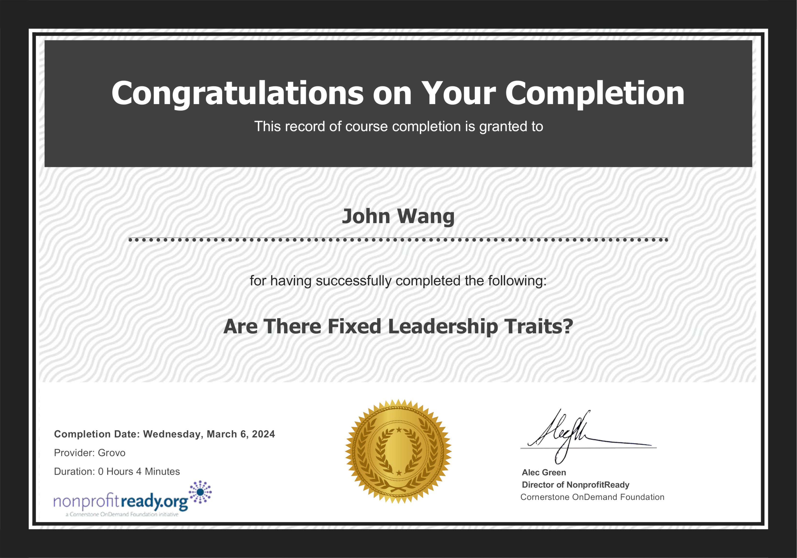
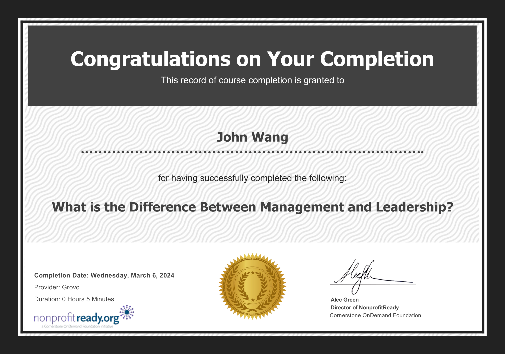

John's Leadership Certificates
Fundamentals (4)
Stanford Executive Program (SEP) from Stanford

Are There Fixed Leadership Traits? from NonprofitReady

What is the Difference Between Management and Leadership from NonprofitReady

Why Leadership Isn't About the Leader from NonprofitReady
Strategy (1)
Successful Strategies for Emerging Leaders from NonprofitReady by The Jeff Havens Company
Inspiration (1)
How Great Leaders Inspire Action from NonprofitReady by Simon Sinek